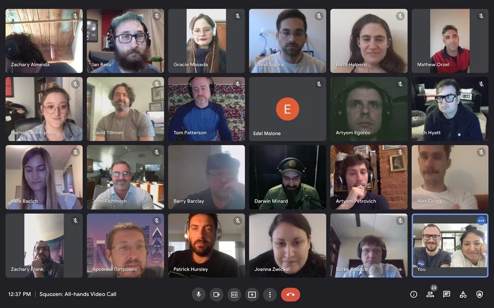
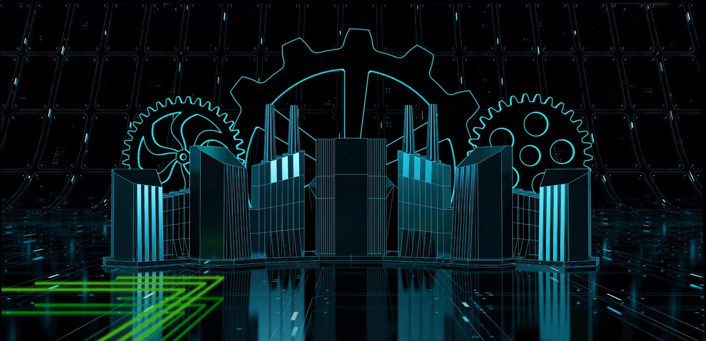
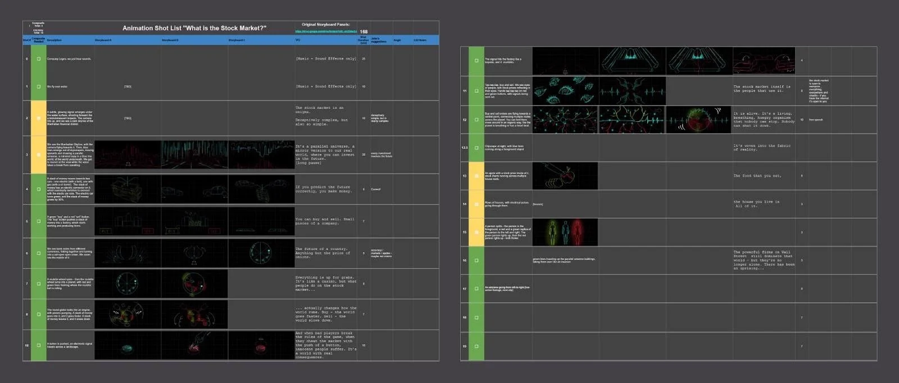
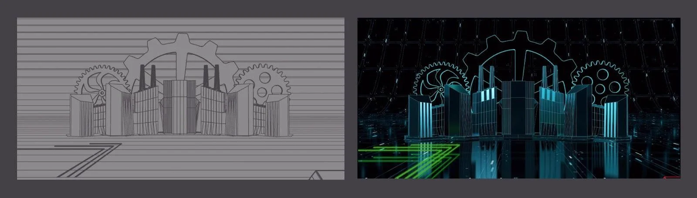
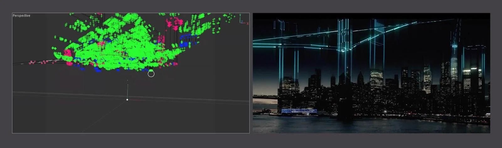
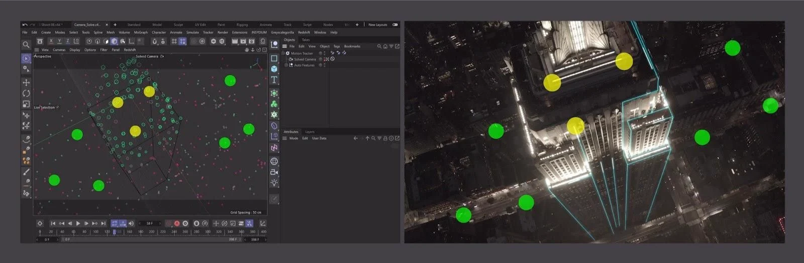
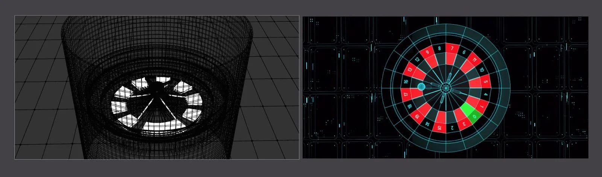
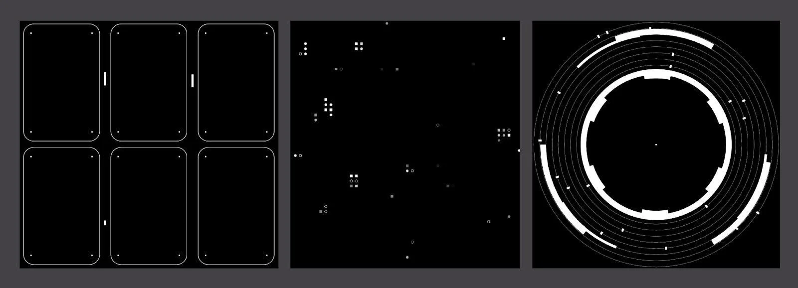
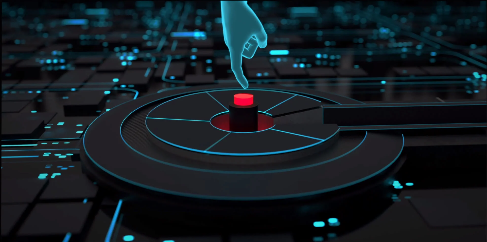
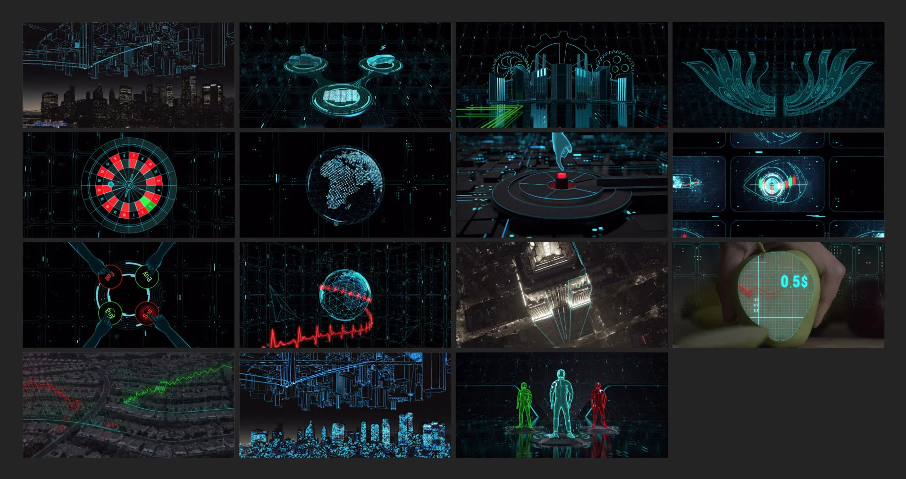

3D-заставка к документальному
сериалу на HBO Max
Игры Уолл-стрит
Задача
Сделать заставку для сериала, которая за полторы минуты объясняет, как работает фондовый рынок.
Решение
Сценарий дал режиссер, мы придумали под него всю 3D-графику в стиле фильма «Трон»: светящиеся линии на темном фоне. В четырех сценах графика наложена на настоящую съемку Нью-Йорка.
Команда в семи часовых поясах

Над сериалом работали 30 человек в разных странах. Общий созвон несколько раз переносили: кто-то подключался в пять утра, кто-то поздно вечером. На старте была только раскадровка и просьба сделать «как в «Троне»».


Стиль Tron Legacy: одновременно и просто, и сложно
Просто со светом: все светится само на темном фоне. Сложно с моделями: они видны ровно такими, какими их построили, и огрехи светом не спрячешь.

Зеркальный Манхэттен
Сначала хотели построить весь Манхэттен в 3D, но режиссер вовремя отговорил: он снял город с дрона. Мы добавили над ним светящийся «параллельный» город, модель домов взяли из Google Maps. Совместить два города точно и красиво сразу не получалось. Выбрали красиво: часть домов пришлось сдвинуть или убрать.
Город появляется в три этапа: опора моста и дома вокруг, потом середина, потом остальное. Если выращивать все сразу, частицы смешиваются, и картинка выглядит слишком сложной.

Трекинг камеры
Чтобы наложить графику на съемку, нужно восстановить движение настоящей камеры. Сложнее всего было с Эмпайр-стейт-билдинг: дрон снимал высоко, точки для трекинга остались далеко внизу, а на вращающемся здании опереться не на что. Линии на здании доводили вручную.

Рулетка и одна текстура на все сцены
Первые шарики то лениво падали на номер, то выпрыгивали за стол. Пришлось поставить вокруг рулетки невидимый бортик.

На всех поверхностях одна анимированная текстура: скругленные прямоугольники и точки. Так все предметы выглядят из одного мира. Линии от кнопок строятся процедурно: несколько настроек вместо ручной анимации сотен объектов.


Формат поменяли посреди работы
Когда сцены были готовы, HBO попросили сменить формат с 2,35:1 на 2:1, а потом вместо Full HD сделать 4K. Камеры во всех сценах перенастроили заново. Рендер в 4K идет в четыре раза дольше. Поэтому вместо рендер-фермы собрали несколько облачных компьютеров: вышло в три раза дешевле, и результат было видно прямо во время рендера.
Артем, Арсений и их команда сделали вступление к нашему документальному сериалу, сложную работу с компьютерной графикой. Они выполнили проект с высочайшим профессионализмом, разница в часовых поясах не помешала работе
20 сцен за три месяца
Работали и в новогодние праздники. Из 2,5 минуты графики после монтажа получилась заставка на полторы минуты.

Ребята отлично сделали работу за три месяца. Общаться было легко, хотя процесс шел очень напряженно
Подробно о работе мы рассказали в статье на No Film School ↗
Сделаем 3D-графику для вашего фильма, выставки или презентации
Обсудить проектНаши главные проекты
Сейчас мы делаем интерактивные экспонаты для музеев и выставок: придумываем, рисуем, программируем и запускаем на площадке.

Следующая работа

Смотрите также
Нужны ролик, графика или сайт?
Пришлите задачу и сроки, обсудим
Давайте обсудим задачу
Москва, ул. Бауманская, 6, стр. 2 · Политика конфиденциальности